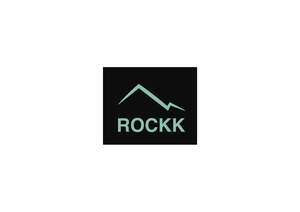
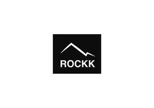
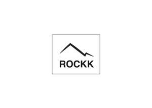

Trade Mark Journal No.2025/024 13 June 2025
UK00004208724 24 May 2025 (18,21,25)
Mark 1

Mark 2

Mark 3

- Class 18
- Bags; Tote bags; Luggage bags; Duffle bags; Duffel bags; Carry-on bags; Toiletry bags; Bags for clothes; Drawstring bags; Carry-all bags; Belt bags and hip bags; Nose bags [feed bags]; Bags (Nose -) [feed bags]; Carrying bags; Grocery tote bags; Cross-body bags; Bags for umbrellas; Diaper bags; Luggage, bags, wallets and other carriers; Crossbody bags; Cloth bags; Bucket bags; Leather bags; Sling bags; Nappy bags; Canvas bags; Shoe bags; Duffel bags for travel; Belt bags; Clutch bags; Wheeled bags; Kit bags; Messenger bags; Bags for travel; Souvenir bags; Travel bags; Leather bags and wallets; Garment bags; Toilet bags; Shoulder bags; Make-up bags; Cosmetic bags; Waterproof bags; Reusable shopping bags; Makeup bags; Camping bags; Umbrella bags; Towelling bags; Courier bags; Bags for campers; Bags [envelopes, pouches] for packaging of leather; Bags [envelopes, pouches] of leather, for packaging; Bags for carrying pets; Knitted bags; Bags [envelopes, pouches] of leather for packaging; Roll bags; Gym bags; Hand bags; Travelling bags; Attaché bags; Cabin bags; Flight bags; Traveling bags; Overnight bags; Beach bags; Bags for climbers; Mesh shopping bags; Mesh bags for shopping; Boot bags; Canvas shopping bags; Leather shopping bags; Hiking bags; Bum bags; Frames for bags [structural parts of bags]; Knitting bags; Roller bags; Wash bags for carrying toiletries; Suit bags; Nose bags; Baby carrying bags; Hunting bags; Gladstone bags; Feed bags; Waist bags.
- Class 21
- Coffee cups; Tea cups; Cups; Coffee mugs; Cups and mugs; Drinking cups; Coffee pots; Non-electric coffee drippers for brewing coffee; Coffee stirrers; Coffee scoops; Liqueur cups; Glass cups; Sippy cups; Fruit cups; Cups (Fruit -); Compostable cups; Coffee grinders; Paper cups; Plastic cups; Cardboard cups; Cup lids; Egg cups; Cups (Egg -); Coffee pots [non-electric]; Non-electric coffee pots; Biodegradable cups; Vacuum coffee bean containers; Baking cups of paper; Paper baking cups; Mixing cups; Cupcake baking cups; Coffee filters not of paper being part of non-electric coffee makers; Coffee filters, not of paper, being part of non-electric coffee makers; Coffee percolators, non-electric; Non-electric coffee percolators; Percolators (Coffee -), non-electric; Feeding cups; Tea pots; Sake cups; Cups of paper or plastic.
- Class 25
- Fashion hats; Menswear; Ready-to-wear clothing; Knitwear [clothing]; Face masks [fashion wear] ; Casual clothing; Foulards [clothing articles]; Clothing; Casual footwear; Dance clothing; Sportswear; Clothing for sports; Sports clothing; Playsuits [clothing]; Bandeaux [clothing]; Parts of clothing, footwear and headgear; Leisure clothing; Footwear; Leather clothing; Clothing of leather; Leather (Clothing of -); Denims [clothing]; Articles of sports clothing; Clothing for leisure wear; Knitwear; Corsets [clothing, foundation garments]; Clothing for martial arts; Smart clothing; Articles of clothing; Japanese traditional clothing; Headbands [clothing]; Headbands for clothing; Japanese style sandals of leather; Footwear for women; Cashmere clothing; Sports garments; Sports footwear; Athletic clothing; Footwear for sports; Kendo outfits; Jackets being sports clothing; Clothing of imitations of leather; Leather (Clothing of imitations of -); Clothing for wear in wrestling games; Furs [clothing]; Clothes for sports; Men's clothing; Footwear for sport; Footwear for use in sport; Leisure footwear; Japanese style clogs and sandals; Skating outfits; Clothing for gymnastics; Party hats [clothing]; Clothing for cycling; Footwear for snowboarding; Clothes for sport; Articles of clothing made of leather; Uppers for Japanese style sandals; Clothing for skiing; Sports [Boots for -]; Plus fours; Peaked caps; Night shirts.
Jamie Standen